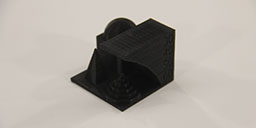

Assignment 5
This week we were asked to test, print and scan an object to test the 3D printing capabilities of our equipment. Our lab is currently outfitted with 7 Makerbots Replicators, A Cube Duo and a Mini-Max kit machine from Maker Tool Works. The Mini-Max was built by my Engineering Design and Development students last school year and specifically set up to run flexible filament (Ninja Flex). The students not only built the kit but also modded it to run the flexible material. The complicated part about flexible material is that it is like pushing rope or trying to push a cooked spaghetti noodle through a straw. We are also currently equipped with a Sense 3D scanner.
For the first portion of the week's assignment we were tasked with testing the parameters of our scanner. We chose to run some test pieces on the Makerbot as those are the workhorses of our lab. Currently the Cube is in limp mode while I try to find some time to repair it and the Mini-Max is dedicated to the flexible material and is used less frequently. Kayla and I first started by printing out the diagnostic cube which was supposed be 20mm x 20mm. This test showed that we were within .02 mm tolerance which I thought was pretty good considering the amount of work put into these machines on our end to keep them in working order. We we are constantly changing filaments for print jobs and the machines get jostled a bit.
After our initial test measurements on our 20mm cube we decided to grab a test print from wwwd.thingiverse.com to further test the capabilities of our machine. The test is below on the right hand side.
The print turned out poorly but I think that it was due to the fact that we printed it solid with a new supplier of PLA filament. I decided to print a second "test print" that was less solid on the inside. I used a 10% infill with a diamond pattern for the print. I decided to run another test print and see how that turned out. I used another file from www.thingiverse.com to put our machine through it's paces. This print turned out significantly better than the first. It seems as though we can print at as much as a 30 degree overhang without supports and that our layer resolution is pretty detailed.
 printer test fileFor our actual 3D printing I decide do do two versions of a turner's cube. Typically these are done using a lathe but since we do not have one in our lab I figured we could use the 3D printer to see if I could get the same effect since the cube uses some under cuts in order to make it. I designed the cube using Autodesk Inventor and it took 32 steps to get it to work out correctly. The basic gist of the design is to use smaller and smaller circles cut into each side of the cube to free up a nested set of cubes that freely move inside of themselves without falling out. The next step was to move it into the Makerbot Desktop sofware in order to set the parameters for the print.

 turners cube file turners cube 3d printer file
turners cube file turners cube 3d printer file
The print failed due to the filament getting stuck on the spool so I enlarged the print and started it on a new machine in clear PLA.
After I was done with the Inventor file I exported it as an .stl file which is ready by our Makerbot software. In that software you are able to mess with the settings to control temp, rafts, supports and infill. I left the general perameters in the default state. I was pretty pleased with both of the prints. I spent quite a bit of time trying to remove the support material from the prints. In the future I will try to adjust the settings to help with removal. We have a Cube Duo and if I get around to getting that fixed I will also try to print with a different support material that I can disolve.
While we were working on our 3D prints we also took some time to mess around with 3D scanning. Our homework was to scan an object, print for extra credit and build our own scanner for extra, extra credit. We have had a Sense Scanner operational in the lab since the beginning of the year. We have spent some time tweaking settings and playing around with the different applications for using it. For example we have tried keeping the camera stationary while rotating the object being scanned and vice versa. I chose to scan two machined parts off of an antique trolling motor. I have a student of mine who is paying for his college tuition by rebuilding/refurnishing old trolling motors. He brought these two parts to me in hopes that we can re-create them in the Innovation Center. My first thought is that we need to creat a scanned image of them so that we can move them to the 3D printer then on to the mill/router. The first hurdle was the fact that they are made out of aluminium and quite shiney. I am experimenting with two different ways around this. The first was to spray one of the items with CerMark because it gives a dull finish and is easily washed away with water. The second item was covered in blue painters tape to see if that would work. After numerous attempts and failures it seems that our Sense has a really hard time with objects that are not dark colored or larger than a baskeball. Feeling defeated I then tried AutoDesk's ReMake sofware. There is definately a learning curve to taking the right type and amount of photos. I had roughly 100 photos that I snapped and 38 of them were not able to be stiched. As you can see below this left some holes in my mesh. I am going to go back and play around with this again with some different lighting and backgrounds to see if I can get this to work.
As I mentioned before scanning with the sense does work on larger things. below is a Byron. He is a a student in my Engineering class that we scanned when we first got the scanner up and running in the lab. As you can see he turned out quite well! My class wants to make full size chess pieces and a chess board if we all finish our class projects on time in May.
Advantages and Limitation
After working through this weeks assignments Kayla and I now have a better understanding of the capabilities in our lab. Some of the advantages to these processes are that parts can be made relatively quickly and cheaply in order to test fitment, make one off parts and allow people to quickly see parts designed on the screen in real life. While these printed parts are pretty high resolution they are not on the same scale as if something were to be milled or routed. We also have some basic ability to scan larger, non shiney items with our scanner with some success. Our limitations would be that some parts that we are generating simply cannot be printed in any real capacity. We are also running into some issues with our scanning. We are looking to other ways to scan more effecively than simply using our sense scanner.
This is StoneWork, a free, fully standards-compliant CSS template designed by TEMPLATED. The photos in this template are from Fotogrph. This free template is released under the Creative Commons Attribution license, so you're pretty much free to do whatever you want with it (even use it commercially) provided you give us credit for it. Have fun :)